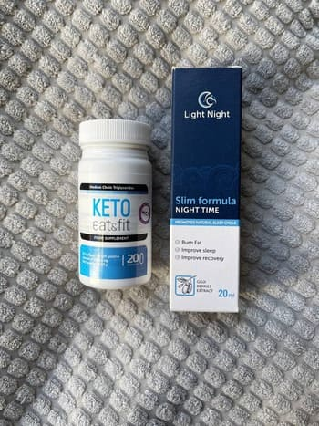

Vlad Sandu - expert în domeniul nutriției sănătoase,
specialist în dietetică,
autorul cărților despre sănătate și tehnici sigure de pierdere
în greutate.
Vlad Sandu a povestit de ce anul acesta, experții în domeniul dieteticii ar putea rămâne fără loc de muncă!
Vlad Sandu: "Bună ziua, dragii mei! Astăzi am decis să ridic cel mai problematic subiect în rândul oamenilor. Dietele cu conținut scăzut de calorii și multe produse sintetice de ardere a grăsimilor FUNCȚIONEAZĂ ÎMPOTRIVA SĂNĂTĂȚII VOASTRE! Da, ele pot da un efect temporar, dar deja după 6-7 săptămâni pot pur și simplu "ucide" metabolismul. Organismul va începe în cele din urmă să ceară dulciuri, să acumuleze grăsimi și să economisească energia. Prin urmare, după o încercare nereușită de a pierde în greutate, putem câștiga chiar mai mult decât a fost.
Din fericire, în lumea modernă deja există o soluție. Și din cauza ei, toți specialiștii din domeniul dieteticii și formatorul pot fi în afara muncii (râde).
La sfârșitul anului trecut în publicații științifice apărut instrumentul - o alternativă la produsele periculoase de ardere a grăsimilor, care pot tripla rata metabolică și pot îmbunătăți pierderea naturală în greutate.
Doar imaginați-vă - într-o lună puteți pierde până la 17 kg, curățându-vă simultan organismul. Și această soluție a devenit atât de ingenioasă și simplă încât nici nu-mi vine să cred."
Ce este ?
Dacă organismul nu are vitamina C, atunci mâncăm o portocală. Dacă nu este suficient fosfor, mâncăm pește. Și ce facem când se acumulează grăsime? Ne torturăm renunțând la mâncărurile noastre preferate și epuizându-ne corpul cu antrenamente! Dar natura nu funcționează așa. Și pentru ca experții în nutriție să înțeleagă acest adevăr simplu aceasta a luat aproape 8 ani .
S-a dovedit că, cu excesul de greutate, organismul are nevoie de oligoelemente care sunt responsabile pentru defalcarea grăsimilor. În special, acestea sunt super-antioxidanți care ard nu numai grăsimea subcutanată, ci și cel mai periculoasă – viscerală.
– acest remediu cu extracte naturale de plante, care conține 25 de componente, inclusiv bromelaina (conținută în ananas, poate plictisi senzația de foame - nota redacției) , L-carnitină și Spirulină. poate accelera metabolismul cu 307% și crește lipoliza (descompunerea grăsimilor) de aproape 7 ori!
Pierderea în greutate are loc datorită accelerării proceselor naturale ale organismului. Aceasta înseamnă că nu va trebui să vă chinuiți cu exerciții intense și o dietă strictă.
Sfatul redacției:
Pentru a pierde cu 20% mai mult - se recomandă să beți remediul pe stomacul gol!
- acesta este un instrument de nouă generație, o soluție modernă în lupta împotriva excesului de greutate.
Principalele proprietăți ale instrumentului :
-
Este capabil să accelereze procesul de ardere a țesutului adipos;
-
Ajută la controlul apetitului și poate plictisi senzația de foame;
-
Poate normaliza fundalul hormonal;
-
Este capabil să curețe organismul de toxine;
-
Poate avea un efect tonic datorită arderii masei grase.
Produsul este un activator metabolic natural. Aceasta înseamnă că conține numai acele ingrediente naturale care contribuie la procesul de lipoliză. - acesta este un remediu care poate elimina grăsimea nu numai din coapse și abdomen, ci și din mai multe zone "complexe": brațe în zone de triceps, bărbie și gât. 98 din 100 de respondenți cu vârsta peste 55 de ani au confirmat că remediul a ajutat la scăderea stratului de grăsime chiar și deasupra lamelor umărului, ceea ce anterior a fost posibil numai prin îndepărtarea chirurgicală a depozitelor de grăsime.
Remediul nu numai că poate elimina excesul de greutate, dar este, de asemenea, capabil să mențină un procent redus de grăsime corporală. Iată ce rezultat puteți obține:
Ruslana Oprea, 38 de ani.
Alexandru Lazar, 40 de ani.
Iarisa Țoman, 32 de ani.
Teodor Petre, 39 de ani.
-
1-3 zile - retragerea excesului de apă. Aceasta înseamnă că umflarea din zona picioarelor și a feței poate dispărea. În această perioadă, se recomandă să beți zilnic cel puțin 1,5 litri de apă curată.
-
4-5 zile - accelerarea metabolismului. Organismul va putea cheltui de la 4000 kcal pe zi (cu efort fizic de la 4500 kcal - nota redacției).
-
5-7 zile - activarea lipolizei. Se începe procesul de ardere a țesutului adipos și transformarea acestuia în energie. Veți putea simți vivacitatea și un val de forță.
-
8-11 zile - curățarea intestinelor de toxine. În cele din urmă veți putea simți ușurința în stomac.
-
11+ zi - arderea grăsimilor viscerale. Grăsimea din organele interne va începe să se dizolve. Nu va avea prea mult efect asupra greutății, dar poate avea cu siguranță un efect pozitiv asupra sănătății.
Notă editorială:
Remediul este capabil să suprime foarte mult apetitul. Nu uitați să mâncați în mod normal și corect în timpul programului de scădere în greutate – acest lucru va întări rezultatul!
Opinia experților:
Alec Rusu - expert în domeniul endocrinologiei și un specialist în nutriție adecvată. Experiență de muncă - 27 de ani.
Alec Rusu: "Cel mai important lucru într-un program de scădere în greutate este să nu vă dăunați organismului. Prin urmare, este imposibil să mori de foame în mod constant, este chinuitor și dăunător. Multe arzătoare sportive de grăsimi și alte substanțe chimice deprimă doar organismul, încarcă ficatul și pot provoca un eșec hormonal (și de a-l readuce la normal va fi foarte dificil). Pierderea în greutate ar trebui să fie naturală și să nu perturbe procesele interne ale organismului!
În acest moment - un remediu unic care îndeplinește aceste sarcini. Oligoelementele active sunt capabile să accelereze metabolismul și arderea grăsimilor, iar concentratul lor în fiecare doză poate spori aceste procese de aproape 8 ori! Sunt sigur că acest remediu este cel mai bun pe care l-a obținut dietetica modernă. Îl recomand tuturor! Unul dintre prietenii mei a pierdut 38 excesive în plus pe parcursul programului, iar acesta este la vârsta de 62 de ani. Vă puteți imagina?!
Dorin Mihai expert în domeniul dieteticii și endocrinologiei. Experiență de muncă - 18 de ani.
Dorin Mihai: "Femeile vin adesea la mine, literalmente, cu lacrimi în ochi. Am încercat totul, dar fie nu a apărut nici un rezultat, fie greutatea se întoarce constant. Obișnuiam să-i sfătuiesc să se calmeze, să se concentreze și să înceapă din nou. Dar astăzi există o cale de ieșire - . Poate fi luat ca supliment alimentar și să pierdeți în mod natural până la 17 kg într-un curs. Acesta este un remediu cu extracte de plante care pot fi potrivite pentru toată lumea, indiferent de sex, vârstă sau starea de sănătate. Pierderea în greutate se realizează numai prin arderea masei grase și nu prin deshidratarea organismului. În zonele problematice, efectul poate fi vizibil după o săptămână. acesta este de mult timp folosit în dietetica Occidentală, iar acum câștigă popularitate în întreaga lume. Personal, îl recomand tuturor celor care vin la mine cu o problemă de exces de greutate și până acum nu am auzit nici o singură plângere.»
Notă editorială:
S-a dovedit că februarie și martie - cel mai bun moment pentru a începe programul de scădere în greutate cu un remediu . Datorită modificărilor temperaturii medii și accelerării metabolismului, efectul utilizării complexului poate crește de 3 ori, iar excesul de greutate poate dispărea cu 45% mai repede.
Rezultatele utilizării .
Conform sondajelor efectuate în rândul persoanelor care au luat cursul timp de 30 de zile și în același timp nu și-au schimbat dieta, au obținut următoarele rezultate:
Un grup de subiecți (100 de persoane) care au fost supraponderali au luat remediul COMPLEX CETO INTELIGENT 24\7 zilnic, timp de o lună, ca supliment alimentar, fără a schimba dieta obișnuită. În cursul studiului au fost obținute următoarele rezultate:
1. Pierderea masei de grăsime de la 12 la 15 kg.
-
când scapi de 15kg – 93%.
-
când scapi de 12kg – 98%.
* Pierderea în acest caz înseamnă scăderea masei grase și absența acesteia în decurs de 1 lună.
2. Îmbunătățire notabilă a metabolismului - 98%
3. Creșterea tonusului și a activității fizice - 97%
4. Îmbunătățirea funcționării ficatului și a sistemului endocrin - 95%
Persoanele care au luat au remarcat că complexul poate accelera metabolismul și arderea grăsimilor. El a ajutat persoanele supraponderale, persoanele cu metabolism afectat și cu niveluri ridicate de zahăr.
Cum să obțineți ?
Vlad Sandu: " poate fi obținut la o reducere! Oricine o poate face acest lucru! Am lansat un program social și am stabilit distribuirea directă a fondurilor. Fără o verigă intermediară sub formă de lanțuri de farmacii. Am discutat mai multe opțiuni și ne-am oprit la cea mai eficientă. Persoana care dorește să cumpere , participă la extragere online, după care este contactat, consultat și îi va fi trimis remediul. Din ordinul liderilor Asociației Internaționale a Experților în domeniul endocrinologiei și dieteticii, a fost deja creată o distribuție online care funcționează în țara noastră. Acum aproape toată lumea are internet. Chiar dacă persoana nu are computer, atunci cel mai adesea are telefon cu acces la Internet. Și toată lumea poate participa la program social. Fiecare persoană care va participa la extragere până la 29.03.2022, are șansa de a obține o reducere de la 10% - 50 la . Acesta este programul nostru internațional pentru a atrage atenția oamenilor asupra instrumentului. Sperăm că va ajuta oamenii, le vor spune prietenilor despre ăsta și toată lumea va afla despre .
Pentru a obține o reducere de până la 50% la , conform programului de asistență socială, faceți clic pe pungi și luați reducerea la produs.”
De la redacție: În cadrul programului social, poate fi obținut la o reducere. Pentru a face acest lucru, trebuie să deschideți pungile și să colectați reducerea, completați formularul de comandă de mai jos, înainte de 29.03.2022 (inclusiv). Numărul de produse promoționale este limitat!
pe teritoriul țării, puteți achiziționa la o ofertă specială, numai participând la extragerea reducerilor de până la 50%!
Bună, am încercat să beau doar capsulele și într-o lună am devenit mai ușoară cu doar 8 kg ((((
Larisa, acesta este un rezultat bun. Dar dacă aveți nevoie de mai mult, luați capsule
în combinație cu spray și revizuiți-vă dieta. Luați remediul conform recomandărilor
din instrucțiuni.
Cu stimă, Vlad Sandu.
Nu am câștigat un pachet cu reducere, ce ar trebui să fac?! Pot încerca din nou?

Am început să beau și mâncam tot ce vroiam, în timp ce am daj jos 9 kg.
Cred că este cel mai bun remediu pentru pierdere în greutate.
Și cel mai frumos lucru nu trebuie să te distrugi în sala de gimnastică, nu am timp
și dorință pentru asta. O astfel de soluție este perfectă pentru oameni ca mine! Recomand!
Iată rezultatele mele:
Înainte de a lua acest remediu, am cântărit 90 kg. În tinerețe, eram
întotdeauna subțire, și cu vârsta, într-un fel a apărut treptat o burtă,
laturi. La vârsta de 35 de ani, mi-am dat seama că trebuie urgent să mă aduc în
ordine. M-am dedicat antrenamentului timp de aproape un an, dar nu am putut ajunge la
forma mea normală. Apoi am adăugat acest complex la dietă și în doar câteva
săptămâni m-am transformat în persoana pe care mi-o amintesc din tinerețe. Acum
am grijă de figura mea și am întotdeauna în stoc!
mi s-a potrivit. Acum mănânc ce vreau și mă laud;) am
pierdut 23 kg. Continui în același spirit!;)
Ați încercat să nu mai mâncați?! Ei bine, când sunt copiii - este clar, ce le dau, aceea mănâncă. Dar acum sunt deja femei adulte, oare e atât do complicat să te controlezi și să nu mănânci?!
Catalina, dacă nu ați știut, există oameni care au o predispoziție genetică la plinătate
și nici o dietă și multe alte mijloace nu salvează de asta. Dacă nu sunteți înclinați
spre plinătate - sunteți norocoși, dar vă asigur, nu toată lumea este la fel de norocoasă
ca tine!
Cu stimă, Vlad Sandu.
Catalina, da, practic nu mănânc nimic, dar nu ajută. Greutatea s-a oprit și nu scade!
Am fost surprins că scrieți că numai experții știu despre .
Îl beau regulat de un an. Inițial, m-a ajutat să slăbesc 14 kg., iar acum îl iau
doar pentru prevenire și doar pentru sănătate, este un concentrat bogat de fructe.
Prietenele mele, apropo, știu și despre asta de mult timp, deci nu este doar secretul
vostru!)) FOTOGRAFIILE ÎNAINTE ȘI DUPĂ:
De ce să-i conducem pe toți la același standard? De ce toată lumea trebuie să fie subțire?! Eu, de exemplu, cântăresc 79 kg la o înălțime de 167 și nu-mi este rușine de asta. Îmi place cum arăt și mă simt minunat!
Aurora, pur și simplu tendințele și moda secolului 21, fac fetele să meargă la metode
extreme și să arate ca modele, cel mai adesea aceste metode extreme le afectează
sănătatea. Prin urmare, am creat un astfel de instrument care poate ajuta la scăderea
în greutate și, în același timp, susține activitatea organismului.
Cu
stimă, Vlad Sandu.
Fetelor! Urgent trebuie să pierd 9 kg!!! Am stat acasă șase luni și nu am observat cum m-am îngrașat. Ce să fac?! SOS!!! Nu pot sta pe diete, nu am voință, apoi mă arunc și mănânc și mai mult. Sala de sport nu este, de asemenea, pentru mine, sunt prea leneșă și plictisitoare...
Madalina, lenea nu este cea mai buna calitate a persoanelor, dar din fericire ești
norocoasă, este exact ceea de ce am nevoie!
Cu stimă, Vlad
Sandu.
Extragerea reducerii și formularul special după ce este singurul loc unde puteți lua în țara noastră? Sau este încă vândut în unele magazine online?
Krista, din păcate, dar da, pentru că farmaciile private încearcă să fac[ profit pe
oameni, iar noi încercăm să-i ajutăm să facă față problemelor lor de sănătate.
Lanțurile de farmacii private au refuzat să stabilească prețul producătorului, deci
trebuie să vindem pe Internet, deoarece aici putem seta prețul acceptabil pentru
dvs.
Cu stimă, Vlad Sandu.
Nici soția mea nu poate slăbi. Când ne-am căsătorit - era de 53 kg, acum 68. Cel mai rău lucru este că totul îi convine. Scriți corect, te obișnuiești cu greutatea și parcă a fost întotdeauna așa!
Cornel, da, dar dacă nu sunteți mulțumit, puteți utiliza ,
încercați împreună cu soția. Vă va ajuta să vă măriți energia, iar soția va face
față kilogramelor în plus.
Cu stimă, Vlad Sandu.
Beau de mult timp. Și eu am avut probleme cu greutatea, dar acum
nici nu mă gândesc la asta, mănânc totul la rând și, dacă m-am
îngrașat, beau produsul și sunt bine din nou.
Mișto dacă într-adevăr funcționează. Deși sunt sceptic. Mai mult cred în voință, decât orice mijloace. Dar ceea ce nu veți face de dragul figurii, voi comanda!
Mirela, sfatul meu pentru tine este doar să bei cursul și acest lucru poate fi suficient
pentru o lungă perioadă de timp, principalul lucru, în același timp, este să urmezi o
dietă rațională.
Cu stimă, Vlad Sandu.
Am 97 kg. Nu știu cum să le îndepărtez. Nu vreau să depășesc 100. Ce să fac?! Ajutor!!! Pot oare găsi într-o farmacie privată?
Elena, ei bine, puteți căuta, desigur, dar am comandat doar pe acest site, în plus și cu o reducere!
Elena, principalul lucru este să nu intri în panică, totul se poate corecta. Să
începem în ordine, mai întâi - din păcate, este imposibil să găsiți
acest remediu într-o farmacie privată, am scris deja motivul de mai sus. În al
doilea rând, comandați și luați urmând instrucțiunile,
repet, luați numai, prin conform instrucțiunilor dacă doriți să obțineți rezultatul
dorit.
Cu stimă, Vlad Sandu.
Bună ziua! Sunt mamă a doi copii și încerc să slăbesc de când îmi amintesc. Nu pot sta pe diete, am suficientă putere doar pentru câteva zile, apoi lepăd toate și mănânc mult. Nu am absolut timp pentru sport. Am citit acest articol și m-am luat foc, dar nu-mi este foarte clar cum să-l iau. Instrucțiunea este scrisă pe ambalaj? Sau poate există o rețetă? Și nu este dăunător apoi să nu mai folosim acest remediu? Dacă puteți, vă rugăm să răspundeți la întrebările mele sau să-mi spuneți unde să citesc despre asta. Aș fi foarte recunoscătoare.
Diana, Bună ziua! include capsule și spray. Se recomandă
administrarea capsulelor de 2 ori pe zi cu mese. Pulverizați cu 20 de minute înainte
de culcare (3 pulverizări sub limbă). Instrucțiunea în sine este localizată separat
în cutie. Puteți înceta să luați în orice moment,
de îndată ce sunteți mulțumit de rezultat!
Cu ctimă, Vlad Sandu.
Bună ziua! Am 50 de ani și mi-am dorit foarte mult să slăbesc. Știam perfect că la această vârstă era mai greu să o fac, dar încă făceam încercări. Am decis să încerc să comand . Câteva săptămâni mai târziu am făcut următoarea comandă, pentru că efectul m-a impresionat! Am pierdut 11 kilograme!!! Desigur, în același timp, mă alimentam corect și am încercat să mă asigur cu activitate fizică, dar nu am așteptat la astfel de rezultate. Vă mulțumim pentru articol. De asemenea, recomand tuturor!
Cât de bucuros sunt că am dat accidental peste acest articol. Și apoi m-am
gândit că nu voi fi subțire în această viață. Am început să iau abia săptămâna trecută. Trei kilograme au dispărut. Nu mi-am
schimbat
stilul de viață, mănânc la fel ca înainte, doar am redus cantitatea de
mâncare. Apetitul meu frenetic a dispărut undeva, nu mai vreau să mestec în mod
constant ceva. În general, nu știu ce persoană a inventat acest instrument, dar
îi mulțumesc foarte mult.
Este un sentiment ireal când ai vrut cu adevărat ceva, dar ai crezut că este aproape imposibil. Și iată un astfel de miracol. Am devenit deja cu 10 kilograme mai ușoară și continuu în același ritm. Prietenii mei sunt surprinși, cred că stau pe o dietă strictă, sunt îngrijorați de mine. Și nu le spun nimic, lasă-i să ghicească!))
Viorelia, nu trebuie să ne mulțumești, suntem specialiști împreună cu asociații
internaționale care încearcă de dragul sănătății cetățenilor noștri.
Cu stimă,
Vlad Sandu.

Oameni buni, spuneți-mi de unde l-ați cumpărat?! În farmacii private, un astfel de instrument nu este vândut. Aș vrea să nu dau peste un fals, altfel, așa cum înțeleg, nu va avea sens!
Repet încă o dată că poate fi comandat doar pentru această
promoție, pentru a nu greși, trebuie doar să faceți clic pe butonul "Obțineți chiar mai jos! Mai ales pentru cititorii și cetățenii noștri,
există o
mare oportunitate de a obține o reducere de până la 100% prin acord cu producătorul!
Dar nu va dura deloc mult, așa că grăbiți-vă cu comanda! Și vă rugăm, să vă feriți de
falsuri.
Cu stimă, Vlad Sandu.
Am comandat, a fost livrată foarte repede, în câteva zile. Abia am început cursul, dar rezultatul este deja vizibil! Vreau să mănânc mai puțin, sper să văd schimbări pe cântar în curând)
